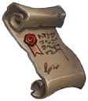
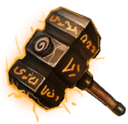
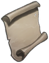
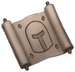
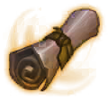
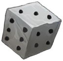
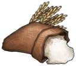
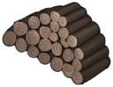
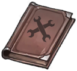
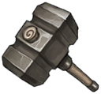

역기획서 · 아이템
기타 아이템 13종
O_Item_Scriptable: 입장권·소환서·강화 재료처럼 재화 역할을 하는 아이템입니다.
전체 표
| 아이템 | 번호 | 등급 | 분류 | 드랍 확률 | 쓰임(데이터상 연결) | |
|---|---|---|---|---|---|---|
 | 영웅 소환서 | 0 | C | O | 0.1 | - |
| 재료 열쇠 | 1 | C | O | 0.16 | - | |
 | 전설 망치 | 3 | C | O | 0 | 계시의 금서, 고급 벨트, 광전사의 목걸이, 광전사의 반지, 광전사의 상의, 광전사의 신발 외 |
 | 투기장 입장권 | 4 | C | O | 0.1 | - |
 | 즉시완성 | 5 | C | O | 0 | - |
 | 골드 던전 입장권 | 6 | C | O | 0 | - |
 | 주사위 | 7 | C | O | 0.12 | - |
 | 곡식 | 8 | C | O | 0.16 | - |
 | 나무묶음 | 9 | C | O | 0.16 | - |
 | 기록서 | 11 | C | O | 0 | - |
| 대장장이의 눈물 | 12 | C | O | 0 | - | |
| 골드 | 13 | C | O | 0 | - | |
 | 망치 | 18 | R | M | 40 | 가벼운 발걸음, 가죽 모자, 가죽 상의, 가죽 신발, 가죽 하의, 강철 검 외 |
원본: O_Item_Scriptable 13건.